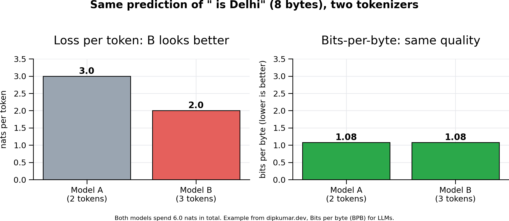
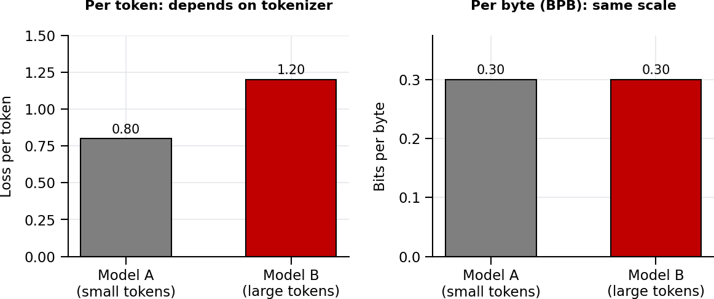

Perplexity is the clearest test of a model’s core intelligence. On OpenAI’s own held-out set, MAI-2 Base scores 0.819, ahead of GPT-5.6 Sol, and MAI’s per-byte, clean-data method is built to compare fairly across every lab.
Why perplexity is the core test
Task benchmarks test specific skills, but they get used up fast and can leak into training data. Pre-training teaches a model one thing: predict the next piece of text. Perplexity measures how well a model predicts the next token on average; lower perplexity means better predictions. It shows how often the model is caught off guard by text it has never seen: the less it's surprised, the stronger the model.
MAI-2 Base on a shared test
MAI-2 Base was scored on OpenAI’s held-out evaluation set with the same tokenizer, so its score sits on exactly the same scale as OpenAI’s base models.

Ahead of GPT-5.6 Sol: MAI-2 Base scores 0.819 vs 0.828, and beats every earlier GPT base model on the chart.
A big step in one generation: from 0.878 (MAI-1 Base) to 0.819 (MAI-2 Base).
Built on its own learning: MAI-2 Base was pre-trained on organic data with no distillation from other models.
Comparing every lab: two requirements
A direct per-token comparison works here because the test set and tokenizer are shared.
Comparing across all labs needs two things:
1. Bits-per-byte instead of perplexity. Labs use different tokenizers, so the same sentence might be 2 tokens for one model and 3 for another. Bits-per-byte (BPB) scores the same prediction quality per byte of raw text, so the result is the same however a model splits it.
2. Use shared, clean evaluation datasets. A held-out set only works as a yardstick if no model has trained on it. Comparing across labs needs new test sets built for that purpose.
BPB = total loss in nats ÷ (ln 2 × number of bytes)

MAI already meets both requirements. It scores models in BPB on its own vendor-built, decontaminated held-out sets:
| Check | What MAI does | Why it matters |
|---|---|---|
| 1. Common scale | Scores every model in bits-per-byte | Fair across tokenizers |
| 2. Four domains | Reports code, STEM, Q&A and math separately | Shows strength by domain |
| 3. Clean test | Uses vendor-built, decontaminated held-out sets | Measures skill, not memory |
| 4. Strong opponents | Compares against 1T+ parameter open-weight models, led by DeepSeek-V4-Pro-Base | Like-for-like comparison |
The result: under all 4 checks, MAI-Base-2 outperforms every open-weight model MAI tested.
Takeaway: On a shared per-token test, MAI-2 Base moves ahead of GPT-5.6 Sol. On MAI’s per-byte, clean-data test, built for comparing every lab, it leads every open-weight model tested. Two strict yardsticks, one consistent story: MAI-2 Base is a frontier-class base model.